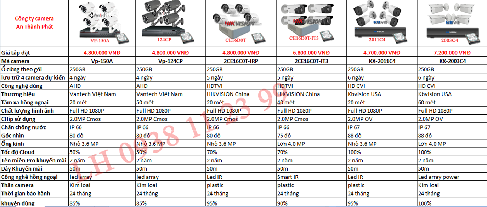
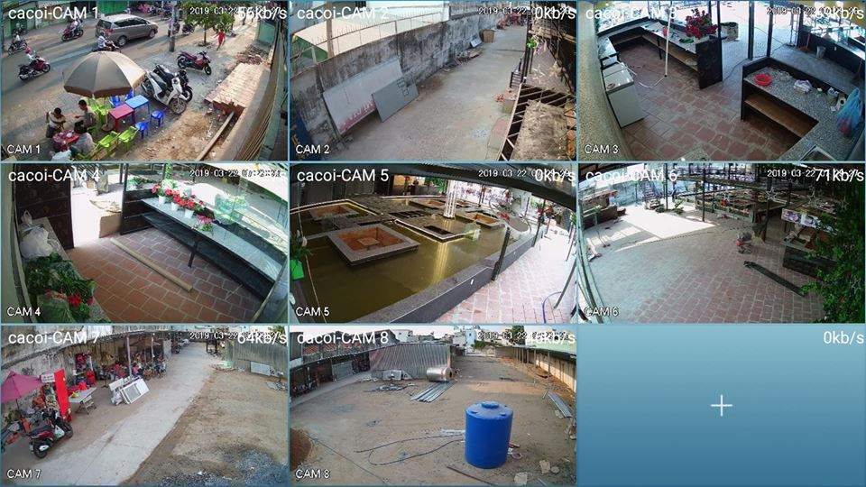
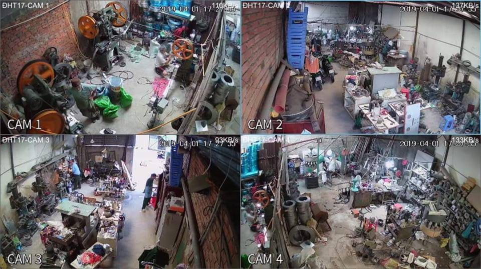
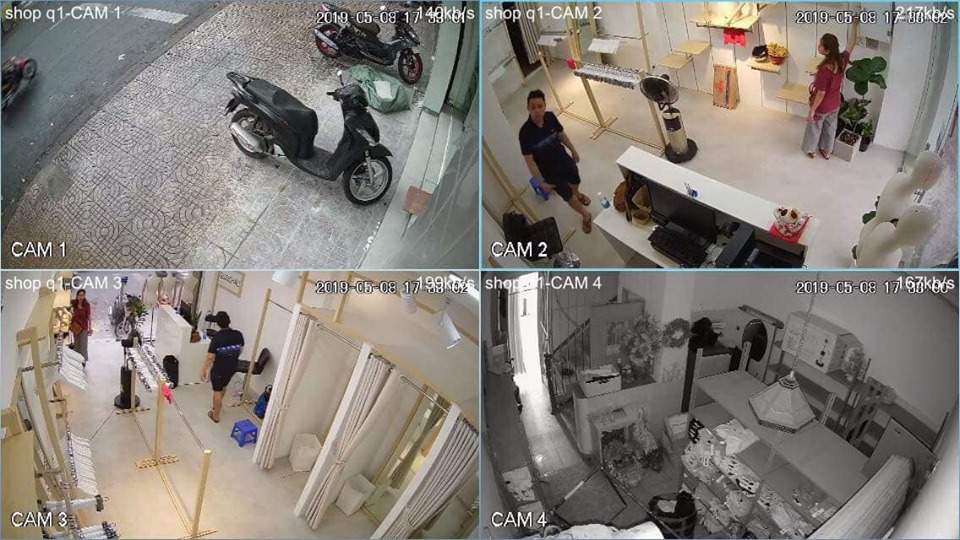
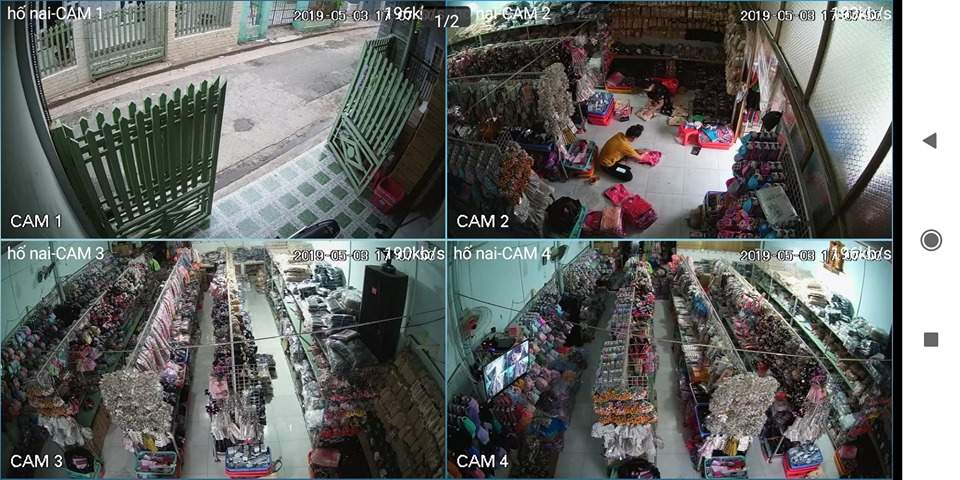

BÁO GIÁ LẮP CAMERA WIFI Quận 8 AN THÀNH PHÁT
- Lắp camera wifi Quận 8 cũng là một trong những lựa chọn tốt dành cho một sốt trường hợp như cửa hàng, gia đình, văn phòng. Camera wifi thường có nhiều mẫu và chức năng, có loại camera wifi vừ đi dây vừa hổ trợ wifi, có loại camera wifi xoay 360 độ hoặc có loại camera có góc rộng, tùy thuộc vào nhu cầu sử dụng để lựa chọn camera cho phù hợp tiết kiệm chi phí và có chất lượng tốt.
- Đa phần Lắp camera wifi tại Quận 8 hiện nay đều sử dụng công nghệ cloud và xem qua mạng bằng điện thoại là chủ yếu. do đó bạn cần quan tâm đến dịch vụ lắp camera wifi tại Quận 8 là chủ yếu. vì sẽ quyết định được tính ổn định để sử dụng camera wifi lâu dài, có dịch vụ lắp đặt sửa chửa tốt , hổ trợ tốt cho bạn trong quá trình sử dụng camera wifi tại Quận 8.
- Khi nào sử dụng camera wifi ? Thông thường với số lượng sử dụng từ 1 đến 2 camera thì bạn nên sử dụng camera wifi để tiết kiệm chi phí và có nhiều chức năng như Đàm Thoại (Nghe và nói) nhỏ gọn và tiết kiệm chi phí.
MỘT SỐ DÒNG CAMERA WIFI NÊN LẮP TẠI Quận 8
Lắp camera wifi tại Quận 8 KX-H2
- Ưu Điệm của dòng camera này là hình ảnh sáng đẹp, dễ sử dụng, kết nối camera qua điện thoại dễ dàng và dễ sử dụng. Góc nhìn rộng 75 độ hổ trợ xoay 360 giá rẻđây là ưu điểm của dòng camera này, Hồng ngoại hổ trợ ban đêm nhìn xa 30m sáng đẹp. Tặng thẻ nhớ lưu trữ 32 GB lưu được 4-5 ngày cho camera chất lượng FULL HD 1080P.
- Âm thanh to rõ phù hợp lắp camera wifi cho Quận 8 tại phòng khách, cửa hàng quày thu ngân những cửa hàng shop thời trang tại Quận 8. Tiết kiệm chi phí hiệu năng cao khi lắp dặt 1 hoặc 2 camera. Bạn có thể chọn lưu trữ lâu hơn với thẻ nhớ nâng cấp đến 128 GB ( từ 20-30 ngày) Liên hệ tư vấn lắp camera wifi tại Quận 8 0938 11 23 99.
Giá lắp 1 camera wifi Quận 8 Giá Rẻ: 1.900.000
Giá lắp 2 camera wifi Quận 8 Giá Rẻ: 3.700.000
Giá lắp 3 camera wifi Quận 8 Giá Rẻ: 5.550.000
Giá lắp 4 camera wifi Quận 8 Giá Rẻ: 7.200.000
Lắp Đặt Camera Quan Sát Ở Quận 8 TPHCM
Công ty An Thành Phát Quận 8 có nhiều năm kinh nghiệm trong lĩnh vực thi công, tư vấn, thiết kế hệ thống camera quan sát ở quận 8 cho rất nhiều công trình nhà ở tại địa bàn, mục tiêu chính là đem đến sự an toàn về tài sản, tính mạng con người là trên hết, kế đến mới tới phục vụ kinh doanh sản xuất.
Do hiện nay tình hình an ninh ở địa bàn khá phức tạp, đặc biệt tập trung đông ở các khu nhà trọ, khu nhà ở công nhân, khu công nghiệp … dẫn đến mọi dịp lễ tết là có vô số vụ án trộm cắp tài sản xảy ra, nhiều khách hàng đã tìm đến lắp đặt camera quận 8 của camera An Thành Phát Quận 8.
Lắp Đặt Camera Quan Sát Ở Quận 8 TPHCM Chúng tôi chuyên lắp đặt camera quận 8 tùy theo nhu cầu và dự án mà khách hàng muốn triển khai, đáp ứng tối đa cho mọi nhu cầu của khách hàng dù là khó tính nhất, đảm bảo khách hàng đã đúng khi lựa chọn công ty An Thành Phát Quận 8 để sử dụng.

Thương Hiệu Camera KBVISION
Hiện nay trên thị trường có rất nhiều loại camera của nhiều thương hiệu nổi tiếng trong nước và ngoài nước. Việc chọn lựa cho mình một nhãn hiệu camera quan sát thì cũng không phải vấn đề đơn giản phải không ah. Camera Thành Công Trường Thịnh sẽ giới thiệu đến cho các bạn 9 thương hiệu được ưu chuộng hiện nay.
Camera KBvision là dòng sản phẩm Camera thông minh thương hiệu Mỹ được người tiêu dùng đánh giá có chất lượng tốt và công nghệ bảo mật hàng đầu trong ngành thiết bị an ninh, … KBvision là hãng chuyên cung cấp những giải pháp an ninh toàn diện, với mức chi phí cạnh tranh, phù hợp với thị trường.
Thương hiệu camera Hikvision
Hikvision là một nhãn hiệu về các sản phẩm giám sát hình ảnh và các giải pháp hàng đầu thế giới. Trong ngành công nghiệp an ninh này Hikvision có những thành tích vô cùng nổi bật với 621 đăng ký sáng chế và 259 bản quyền phần mềm. Các sản phẩm có chất lương cao, đạt tiêu chuẩn quốc tế: ISO, CE, CCC, UL, FCC, RoHS… Gần đây nhất Hikvision đứng vị trí thứ 3 trong top 50 bảng xếp hạng an ninh A&S Information Statistics 2015.Và đây cũng chính là 10 thương hiệu camera quan sát được người tiêu dùng lựa chọn tại Việt Nam.
Thương hiệu camera Dahua
- Dahua Technology Co. Ltd là một nhà cung cấp giải pháp giám sát an ninh. Dahua là công ty đầu tiên ở Trung Quốc đề xướng ra giải pháp ghi hình đồng thời 8 kênh bằng thời gian thực vào đầu ghi hình camera vào năm 2001. Với mức đầu tư 10% doanh số bán hàng hàng năm để đầu tư vào công nghệ. Đến nay Dahua đã có hơn 2000 kỹ sư trong đội ngũ R & D .
Quy trình lắp đặt camera quận 8 của An Thành Phát Quận 8
Khi cần lắp đặt camera ở Q8 chỉ cần nhấc máy lên và gọi ngay: 093 8 11 23 99
Bộ phận kinh doanh xuống báo giá, tư vấn các mẫu mã camera đang thịnh hành nhất.
Có nhân viên kỹ thuật xuống khảo sát mô hình, các vị trí cần thiết để gắn camera.
Tiếp nhận yêu cầu của khách hàng và đưa ra phương án phù hợp nhất.
Tiến hành ký kết hợp đồng, thời gian thi công, thời gian thanh toán cụ thể.
Bắt đầu triển khai công trình đúng tiến độ và thời hạn cam kết đưa ra.
Hoàn thành công trình của khách hàng yêu cầu và thu phí triển khai.
Khảo sát các vị trí lắp đặt camera.
Đo thực tế số dây tín hiệu và số mét dây điện sẽ sử dụng.
Lên giải pháp số lượng, chủng loại camnera cần sử dụng
Thiết kế bản vẽ vị trí lắp đặt camera và đường chạy dây camera quan sát
DỊCH VỤ LẮP CAMERA TẠI QUẬN 8.
LẮP CAMERA GIÁM SÁT VĂN PHÒNG QUẬN 8 
Lắp camera giám sát văn phòng tại Quận 8 là một trong những dịch vụ công ty camera An Thành phát triển khai thông thường sử dụng cho những công ty dịch vụ có văn phòng đặt tại trụ sở Quận 8. Thông thương camera giám sát văn phòng thường sử dụng những gói camera thông dụng giá rẻ, tùy vào đặt điểm của mỗi văn phòng có thể nâng cấp lên 1 camera có thu âm để phù hợp việt giám sát quản lý nhân viên, Lắp camera giám sát văn phòng tại Quận 8 giá rẻ giám sát từ xa qua điện thoại ổn định là tiêu chí hàng đầu.
LẮP CAMERA GIÁM SÁT GIA ĐÌNH QUẬN 8 
Lắp camera giám sát gia đình giá rẻ là một trong những giải pháp bảo vệ An Ninh hiệu quả cho gia đình được lựa chọn hàng đầu ngày nay. Lắp camera giám sát gia đình tại Quận 8 thường sử dụng những thương hiệu camera quan sát chất lượng sử dụng lâu dài, Giám sát qua điện thoại từ xa ổn định là tiêu chí đặt lên hàng đầu khi lắp camera gia đình tại Quận 8. Giá rẻ lá một phần tiêu chí ổn định khi giám sát từ xa là giá trị quan trọng hơn để đảm bảo an nhinh cho gia đình bạn tại Quận 8. An Thành Phát Luôn bên bạn khi cần.
LẮP CAMERA GIÁM SÁT CỬA HÀNG TẠI Quận 8 
Lắp camera giám sát cửa hàng tại Quận 8 thường sử dụng những gói camera giá rẻ phù hợp với từng nhu cầu kinh doanh, Thông thường cửa hàng sử dụng gói camera 4,5tr bộ 4 camera chất lượng hình ảnh FULL HD 1080P, Lắp camera giám sát cửa hàng tại Quận 8 bảo hảnh 24 tháng tận nơi dịch vụ tốt nhất đổi sản phẩm trong 12 tháng nếu lỗi về thiết bị duy nhất tại An Thành Phát, Công ty lắp camera cửa hàng giá rẻ tại Quận 8 uy tín hàng đầu dịch vụ tốt nhất giải pháp giám sát quản lý cửa hàng hiệu quả. Lắp camera cửa hàng tại Quận 8 nhiều kinh nghiêm.
LẮP ĐẶT CAMERA NHÀ XƯỞNG QUẬN 8 
Lắp camera giám sát nhà xưởng tại Quận 8 An Thành Phát có nhiều kinh nghiệm lắp camera giám sát hiệu quả giám sát từ xa, dịch vu lắp camera nhà xưởng giá rẻ dịch vụ tốt giám sát từ xa hiệu quả, Lắp camera giám sát tại Quận 8 giá rẻ chuyên dụng cho nhà xưởng, Công ty lắp camera giám sát nhà xưởng nhiều kinh nghiệm giá rẻ hiệu quả giám sát từ xa ổn định , camera rõ nét tiết kiệm chi phí, Lắp camera nhà xưởng tại Quận 8 với quy mô lớn giám sát qua điện thoại quản lý từ xa, Công ty camera An Thành Phát chuyên lắp camera nhà xưởng giá rẻ tại Quận 8.
LẮP CAMERA GIÁM SÁT KHO QUẬN 8 
Lắp camera giám sát kho hàng Quận 8 công ty camera An Thành Phát luôn tư vấn khách hàng sử dụng những dòng sản phẩm camera chính hãng , Dịch vụ lắp camera quan sát kho hàng chất lượng uy tín nhất tại Quận 8 dịch vụ tốt và ổn định giúp giám sát quản lý kho hàng từ xa ổn định sử dụng camera quan sát chính hãng chất lượng tốt trong điều kiện thiếu sáng, giúp giám sát chi tiết khi cần. Quận 8 là một trong những khu vực tập trung nhiều kho hàng lớn và giải pháp giá rẻ tiết kiệm luôn được đặt lên hàng đầu khi lắp camera kho hàng tại Quận 8.
LẮP CAMERA GIÁM SAT QUA ĐIỆN THOẠI QUẬN 8 
Lắp camera giám sát tại Quận 8 qua điện thoại từ xa hiện nay đa phần là su hướng để đảm bảo an ninh gia đình văn phòng, tuy nhiên lựa chọn những dòng camera giám sát từ xa ổn định là điều cần thiết, dĩ nhiên hiện nay camera giám sát nào cũng có thể xem qua mạng từ xa bằng điện thoại , còn vấn đề ổn định hay không là do công nghệ cấu thành. để tìm hiểu thêm bạn Điện Thoại: 0938 1 12 3 99 để được tư vấn lựa chọn những dòng camera quan sát phù hợp ổn định khi xem từ xa bằng điện thoại. Giải pháp tên miền hay Cloud đều có những ưu điểm riêng.
LẮP ĐẶT CAMERA TRÔNG TRẺ QUẬN 8 
Lắp camera giám sát trẻ nhỏ tại Quận 8 thường lắp đặt ở những căn hộ nhà riêng , đặt biệt với những gia đình mới sinh em bé thuê người giúp việc hoàn toàn không yên tâm do đó việc lắp camera giám sát trẻ để đảm bảo tình trạng con được chăm sóc tôn an tâm hơn trong công việc, Lắp camera giám sát trẻ nhỏ ở Quận 8 công ty camera An Thành Phát thường tư vấn lắp đặt những camera giám sát có thích hợp micro ghi âm để có thể nghe âm thanh từ điện thoại.
LẮP CAMERA WIFI TẠI Quận 8 GIÁ RẺ 
Lắp đặt camera wifi tại Quận 8 thường dùng lắp đặt cho những dự án nhỏ như, Lắp camera wifi văn phòng nhỏ giá rẻ tại Quận 8, lắp camera giám sát gia đình tại Quận 8 thường dùng 1 hoặc 2 camera. lắp camera wifi cho căn hộ tại Quận 8 đây là những giải pháp lắp camera tiết kiệm chi phí trên địa bàn Quận 8 sử dụng camera quan sát wifi không dây giám sát qua mạng điện thoại là chủ yếu,Lắp camera wifi tại Quận 8 giá rẻ tiết kiệm chi phí.
LẮP CAMERA QUÁN ĂN TẠI Quận 8 
Lắp camera giám sát quán ăn , nhà hàng tại Quận 8 ngày nay cũng phát triển mạnh, thông thường lắp camera quán ăn tại Quận 8 công ty thường sử dụng những dạng camera thân ống hồng ngoại hổ trợ giám sát chế độ thiếu ánh sáng tốt, Việc lắp đặt camera quan sát cho quán ăn tại Quận 8 thường lắp đặt nhanh gọn đảm bảo nhà hàng quán ăn vẫn hoặt động trong suốt quá trình lắp đặt camera tại Quận 8, Những vị trí lắp camera quán ăn tại Quận 8 như, quày thu ngân, trông xe, kho nguyên vật liệu và sảnh.
Vì sao nên lắp đặt camera quận 8 để bảo vệ gia đình ?
Hiện các thành phần xấu, quân trộm cướp ngày một gia tăng nhiều hơn, nhiều kẻ xấu vô công rỗi nghề chỉ chờ người dùng mất cảnh giác là ra tay cướp tài sản, đặc biệt là với các dịp nghỉ lễ, nghỉ tết khi mọi người đi chơi xa nhà trong một thời gian dài là cơ hội của
Có những vụ án xảy ra mà khi kẻ xấu phát hiện chủ nhà chống trả đã ra tay giết luôn cả hộ gia đình, mặc cho người bị hại năn nỉ xin tha, do đó việc đề phòng là quan trọng hơn hết, chỉ cần người dùng lắp đặt camera quận 8 của công ty An Thành Phát Quận 8 là có thể yên tâm về các vấn đề này.
Vì sao khách hàng nên lắp đặt camera chống trộm ở Quận 8 cho gia đình ?
Nếu vẫn cảm thấy không đủ an toàn thì ngoài việc lắp camera, người dùng còn có thể trang bị thêm khóa cửa điện từ, khóa vân tay, hệ thống báo trộm giúp tăng cường an ninh lên gấp nhiều lần thông thường.
Bảng giá lắp đặt camera quận 8 của camera An Thành Phát Quận 8
Khách hàng khi có nhu cầu lắp camera Q8 thường tham khảo bảng giá của rất nhiều đơn vị, lựa chọn các đơn vị nào giá rẻ nhất, tuy nhiên trong lĩnh vực này ” tiền nào là của nấy ” do đó, camera An Thành Phát Quận 8 gửi đến quý khách hàng bảng giá camera để tham khảo, chọn lựa.
Lợi ích mang lại khi lắp đặt camera quan sát quận 8
Người dùng có thể muốn gì xem nấy ở bất cứ đâu, bất cứ lúc nào.
Chọn các góc lắp camera phù hợp để theo dõi mọi hành động, góc nhìn.
Có thể phục vụ cho hoạt động kinh doanh sản xuất của các cửa hàng.
Có thể điều hành an ninh, hoạt động làm việc, sản xuất của cả 1 doanh nghiệp.
Tiết kiệm nhiều chi phí, vận chuyển, đẩy nhanh tiến độ của các công việc, phòng ban.
Xử lý nhanh chóng nếu có các biến cố, các tình trạng bất thường xảy ra.
Có thể đàm thoại 2 chiều thông qua các thiết bị camera ip WiFi dễ dàng.
Giám sát trực tiếp 24/24 khi vắng mặt.
Xem lại video hình ảnh bất cứ lúc nào bạn muốn.
Có thể sử dụng tính năng thu âm thanh của camera.
Có thể sử dụng camera ngụy trang cho mục đích tế nhị.
Tăng cường bảo vệ an ninh, giảm ý muốn trộm cắp của kẻ xấu.
Nâng cao ý thức làm việc của nhân viên và tăng hiệu suất kinh doanh.
Giúp chống trộm hiệu quả, ngôi nhà, cửa hàng hay ngân hàng.
LIÊN KẾT LẮP CAMERA QUAN SÁT QUẬN 12 GIÁ RẺ UY TÍN.
LẮP CAMERA QUẬN 1 GIÁ RẺ 
Lắp camera quan sát quận 1 công ty An Thành Phát thường lắp đặt camera cho cửa hàng, văn phòng và nhà phố . sử dụng những camera quan sát thương hiệu tốt hoặt động ổn định, Hình ảnh chất lượng FULL HD 1080P có thệ giám sát từ xa hình ảnh HD công nghệ mới.
LẮP ĐẶT CAMERA QUẬN 2 
Lắp đặt camera quan sát tại quận 2 thường lắp những dự án căn hộ cao cấp sử dụng camera wifi có chất lượng tốt kết nối giám sát từ xa ổn định, đặt biệt những dự án lắp camera cho những khu biệt thự hình ảnh chất lượng tốt công nghệ FULL HD 1080P.
LẮP CAMERA QUAN SÁT QUÂN 3 
Lắp camera quan sát quận 3 giá rẻ sử dụng camera chính hãng lắp đặt cho những dự án như: shop thời trang, cửa hàng, nhà phố , với những dự án camera quan sát quận 3 chọn camera giá rẻ tiết kiệm phù hợp cho những điều kiện kinh doanh không ổn định cho cửa hàng.
LẮP CAMERA QUẬN 4 UY TÍN 
Công ty lắp camera quan sát tại quận 4 giá rẻ camera giám sát từ xa công nghệ mới sửa chửa lắp đặt camera quan sát giá rẻ tại quận 4 công nghệ mới chuyên lắp camera quan sát quận 4 chuyên lắp cho văn phòng giá rẻ chất lượng tốt, chuyên thi công camera văn phòng giá rẻ chất lượng.
LẮP CAMERA QUẬN 5 GIÁ RẺ 
lắp camera quan sát quận 5 giá rẻ tiết kiệm chi phí chọn công ty An Thành Phát là một trong những công ty camera uy tín sử dụng camera chính hãng giám sát từ xa ổn định, Thường lắp camera quan sát cho cửa hàng nhà phố công nghệ mới giám sát từ xa ổn định tiết kiệm.
LẮP ĐẶT CAMERA QUẬN 6 
Dịch vụ lắp đặt camera quan sát tại quận 6 giá rẻ sử dụng camera chính hãng chất lượng tốt, sử dụng camera quan sát chính hãng công nghệ HD giám sát qua điện thoại từ xa, Camera quan sát tại quận 6 An Thành Phát là một trong những công ty uy tín chuyên lắp caemra cho cửa hàng.
LẮP CAMERA QUAN SÁT QUẬN 7 
Lắp đặt camera quan sát quận 7 thường phục vụ cho những công trình camera quan sát cho căn hộ cao cấp, cửa hàng buôn bán, văn phòng đại diện và những trường học cao cấp giám sát quản lý từ xa, với nhiều năm kinh nghiệm lắp đặt camera quan sát An Thành Phát luôn phụ vụ tốt những công trình chuyên dụng.
CÔNG TY CAMERA QUẬN 8 
Lắp camera quan sát an ninh quận 8 đến thời điểm hiện tại An Thành Phát đã triển khai rất nhiều hệ thống camera giám sát nhà phố, camera giám sát sát khu phố với chất lượng hình ảnh sáng đẹp, thương hiệu camera tốt hàng đầu thế giới, An Thành Phát là công ty camera uy tín hàng đầu lắp đặt camera quan sát chính hãng giá rẻ
CAMERA QUẬN 9 GIÁ RẺ 
Lắp camera quan sát gia đình văn phòng tại quận 9 nên chọn công ty camera An Thành Phát là lựa chọn tốt camera quan sát công nghệ mới giá rẻ camera quan sát hình ảnh HD giám sát từ xa qua mạng điện thoại tại quận 9 chất lượng tốt giá rẻ .
LẮP CAMERA QUẬN 10 
Lắp đặt đặt camera quan sát giá rẻ tại quận 10 dịch vụ lắp camera quan sát cho cửa hàng giá rẻ uy tín sử dụng camera chính hãng chất lượng FULL HD phù hợp lắp camera quan sát cho cửa hàng khu vực quận 10 tiết kiệm chi phí giám sát từ xa ổn định.
LẮP CAMERA QUẬN 11 GIÁ RẺ 
Lắp dặt sử chửa bảo hành camera quan sát tại quận 11 uy tín giá rẻ camera giám sát qua mạng điện thoại từ xa ổn định, Công ty camera An Thành Phát chuyên thi công lắp đặt camera quan sát gia đình cửa hàng văn phòng và căn hộ tại khu vực quận 11 giá rẻ tiết kiệm chi phí giám sát ổn định.
LẮP ĐẶT CAMERA QUẬN 12 
Thi công lắp đặt camera quan sát tại quận 12 giá rẻ camera quận 12 công ty An Thành Phát thường thi công cho nhà xưởng, kho hàng và nhà vườn sử dụng camera có hồng ngoại giám sát tố, hổ trợ giám sát thiếu ánh sáng vẫn thấy màu đây là lựa chọn camera chất lượng.
LẮP CAMERA BÌNH THẠNH 
Dịch vụ tư vấn lắp đặt camera quan sát uy tín khu vực quận Bình Thạnh giá rẻ sử dụng camera quan sát thương hiệu tốt kbvision, Dahua, hikvision giám sát qua mạng điện thoại từ xa ổn định kỹ thuật lắp đặt tận nơi bảo trì bảo hành 24 tháng.Giải pháp tiết kiệm chi phí giám sát từ xa ổn định là tiêu chí hàng đầu
LẮP CAMERA BÌNH TÂN GIÁ RẺ 
Với nhiều năm kinh nghiệm lắp camera quan sát cho nhà xưởng kho hàng trong khu vực quận bình tân, bộ phân kỹ thuật tư vấn giải pháp với nhiều năm kinh nghiệm luôn mang đến cho khách hàng những giải pháp tiết kiệm chi phí hoặt động ổn định giá rẻ sử dụng camera chính hãng.
LẮP CAMERA TÂN BÌNH 
Khu công nghiệp Tân Bình, khu dân cư cao cấp gân sân bay, chợ tân bình là những dự án lắp đặt camera quan sát quan trọng của An Thành Phát với tiêu chí giá rẻ và mang lại hiệu quả cao gân trụ sở công ty là một trong những lợi thế để bảo trì và dịch vụ sau bán hàng tốt nhất.
CAMERA QUAN SÁT TẠI HÓC MÔN 
Quận Hóc môn là một trong những quận huyên tốc độ phát triển cao lắp đặt camera quan sát tại Quận Hóc Môn cũng có nhiều lựa chọn trong đó An Thành Phát là một trong những công ty camera hàng đầu chuyên thi công lắp đặt camera chính hãng giám sát từ xa hổ trợ khách hàng tốt nhất tại Hóc môn củ chi, Công ty lắp camera tại hóc môn giá rẻ.
LẮP CAMERA TÂN PHÚ GIÁ RẺ 
Lắp camera quan sát quận tân phú là nơi tập trung nhiều công ty camera quan sát là quận đang phát triển chính vì vây thường sử dụng những sản phẩm camera giám sát an ninh gia đình, cửa hàng và văn phòng với giá rẻ và tiết kiệm chi phí, camera giám sát ổn định qua điện thoại máy tính từ xa, sử dụng camera quan sát chính hãng hình ảnh sắt nét.
LẮP CAMERA TẠI BÌNH DƯƠNG GIÁ RẺ 
lắp camera wifi tại bình dương giá rẻ tiết kiệm chi phí phù hợp cho gia đình văn phòng và cửa hàng sử dụng số lượng ít từ 1 hoặc 2 camera quan sát thì đây là giải pháp tiết kiệm chi phí, lắp camera wifi tại Bình Dương nhiều chức năng tiện dụng giám sát từ xa qua mạng điện thoại ổn định phù hợp với chi phí đầu tư.
CAMERA QUAN SÁT GÒ VÂP 
Lắp Đặt CAMERA Quan Sát Quận Gò Vấp nhanh và rẻ Nhất sử dụng camera quan sát chính hãng, Công ty chuyên lắp camera quan sát khu vưc gò vấp cho văn phòng gia đình cửa hàng, sử dụng camera quan sát công nghệ mới, lắp camera quan sát gò vấp tiết kiệm chi phí dịch vụ sau bán hàng tốt nhất, Camera quan sát sử dụng công nghệ mới giám sát ổn dịnh.
CÔNG TY LẮP CAMERA TẠI PHÚ NHUẬN 
Lắp camera quan sát quận phú nhuận giá rẻ , giải pháp camera quan sát cửa hàng nhà phố và văn phòng sử dụng camera quan sát chính hãng giá rẻ dịch vụ bảo hành sửa chửa camera quan sát tại quận phú nhuận uy tín nhanh chống và tiết kiệm chi phí cho khách hàng, Gọi Ngay 0938 11 23 99 để được tư vấn giải pháp lắp đặt camera quan sát phù hợp giá rẻ.
HÌNH ẢNH LẮP ĐẶT CAMERA QUAN SÁT QUẬN 8 THỰC TẾ
Công ty Lắp camera An Thành Phát tại quận 8 với dịch vụ tốt chất lượng, đã triển khai hàng nghìn dự án. Từ lắp đặt camera quan sát cho văn phòng, lắp đặt camera quan sát Quận 8 cho cửa hàng, lắp đặt camera quan sát cho công ty tại quận 8.





Khách Hàng Mới Trong Khu Vực Quận 8
- Khách Lắp Camera quan sát chú tuấn Địa điểm lăp đặt camera 341 Bùi Minh Trực p.6. Quận 8 Sử dụng Dịch vụ camera quan sát 1 đầu ghi kx-7108SD6- 8 Camera kx-2012c4 ổ cứng củ của ổng
- Lắp Camera MỸ PHƯỚNG Địa điểm lăp đặt camera 02 an đương vương p .16 Quận 8 Sử dụng Dịch vụ camera quan sát 1 camera yooseee
- Khách Lắp Camera Trần thị nguyệt Địa điểm lăp đặt camera 263/13d Ba Đình, P.8, Quận 8 Sử dụng Dịch vụ camera quan sát 1 đầu ghi KX-7104SD6, 2 cam KX-2111C4, 2 cam KX-2112C4, ổ cứng 500G
- Khách Lắp đặt Camera Anh Đạt Địa điểm lăp đặt camera Đường số 152A Cao Lỗ ,Quận 8 Sử dụng Dịch vụ camera quan sát 1 camera KX-2011C4

- Khách Lắp Camera quan sát TRƯƠNG NGUYÊN ĐỨC Địa điểm lăp đặt camera 002F chung cư hưng phú ,p10 Quận 8 ( chạy vô hẻm 850 đường hưng phú ) Sử dụng Dịch vụ camera quan sát 1 đầu ghi ds-7104hghi-f1 4 camera ds-2ce56dot-irp -1 ổ cứng 1TB
- Lắp Camera Cô mỹ Địa điểm lăp đặt camera 258 tạ quan bữu quan 8 Sử dụng Dịch vụ camera quan sát 2 camera kx-h10w the nho 32 g
- Khách Lắp Camera Nguyễn văn lành Địa điểm lăp đặt camera 17/34 mê cốc p15 quan 8 ( cổng chùa pháp biểu gọi ra don) Sử dụng Dịch vụ camera quan sát Kx-7104td6 3 cam vp-150a hdd 1tb
- Khách Lắp đặt Camera Anh Triết Địa điểm lăp đặt camera 92/20B10 Phạm Hùng , Phường 4 , Quận 8 Sử dụng Dịch vụ camera quan sát camera dấu kín , có thẻ nhớ 32G
- Khách Lắp Camera quan sát nhà thuốc Địa điểm lăp đặt camera 152 Ba Đình. Phường 10, Quận 8 Sử dụng Dịch vụ camera quan sát 1 đầu ghi 8 kx-7108td6- 1 camera 2011c4 4 camera 2012c4- 1 ổ cứng 1TB
- Khách Lắp Camera anh sơn Địa điểm lăp đặt camera 92/20b/10 phạm hùng,f4,quận 8 Sử dụng Dịch vụ camera quan sát camera dấu kín imini cam,chưa có mạng lần sau qua cài
- Lắp Camera Chị Ly Địa điểm lăp đặt camera 188 Cao Lỗ , Phường 4 , Quận 8 Sử dụng Dịch vụ camera quan sát 1 Camera YooSee + 1 Thẻ nhớ
- Khách Lắp đặt Camera Địa điểm lăp đặt camera 555/8 Tùng Thiện Vương, P 12 , Quận 8 Sử dụng Dịch vụ camera quan sát 1 đầu ghi VP-8160P , 2 camera VP-150A , 6 Camera VP-111A , 1 ổ cứng 4T
- Khách Lắp Camera quan sát quán nhậu Địa điểm lăp đặt camera 119 rạch cùng,phường 7, quận 8 Sử dụng Dịch vụ camera quan sát 4 cam ds-2ce16d0t-ip, đầu ds-7204hghi-f1/n,ô cứng 500G( có bắt thêm 3 camera người ta phần mềm p2pcamera)
- Lắp Camera chị vân Địa điểm lăp đặt camera C1/28 phạm hùng,p.bình hưng, quận 8 Sử dụng Dịch vụ camera quan sát 1 đầu ghi 4hik(ds-7104hghi-f1/n), 2 camera hik(ds-2ce56cot-irp), ổ cứng 250G
- Khách Lắp Camera cô mỹ Địa điểm lăp đặt camera 1B/8 HƯNG PHÚ-QUẬN 8 Sử dụng Dịch vụ camera quan sát lắp đặt camera( 4 camera đĩa bay dome),1 đầu ghi 4 cổng
- Lắp đặt Camera quan sát anh dũng Địa điểm lăp đặt camera 289 ba tơ-p.7-quận 8 Sử dụng Dịch vụ camera quan sát lắp đặt camera 6300A
- Khách Lắp Camera Anh Đức Địa điểm lăp đặt camera 11 đường số 6 ,quận 8 Sử dụng Dịch vụ camera quan sát bắt bộ 4 camera ,đầu ghi 4 kênh,ổ cứng 500gb VP-112AHDM
- Lắp Camera Anh Đức Địa điểm lăp đặt camera 11 đường số 6, Minh Trưc 2,f5,quận 8 Sử dụng Dịch vụ camera quan sát thu tiền đi dây trước
- Khách Lắp Camera quan sát anh trung Địa điểm lăp đặt camera C4/19E, phạm hùng, quận 8 Sử dụng Dịch vụ camera quan sát lằp đặt camera quan sát